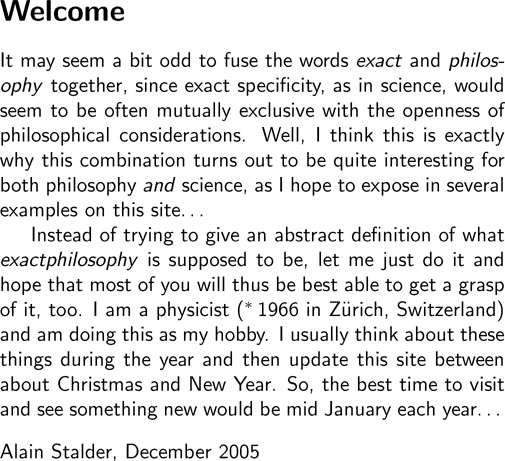

i i i i i i i i i i i i |
  Alain Stalder, A. Stalder, Alain Stalder, A. Stalder, Alain Stalder. Welcome It may seem a bit odd to fuse the words exact and philosophy together, since exact specificity, as in science, would seem to be often mutually exclusive with the openness of philosophical considerations. Well, I think this is exactly why this combination turns out to be quite interesting for both philosophy and science, as I hope to expose in several examples on this site... Instead of trying to give an abstract definition of what exactphilosophy is supposed to be, let me just do it and hope that most of you will thus be best able to get a grasp of it, too. I am a physicist (*1966 in Zürich, Switzerland) and am doing this as my hobby. I usually think about these things during the year and then update this site between about Christmas and New Year. So, the best time to visit and see something new would be mid January each year... Alain Stalder, December 2005 |